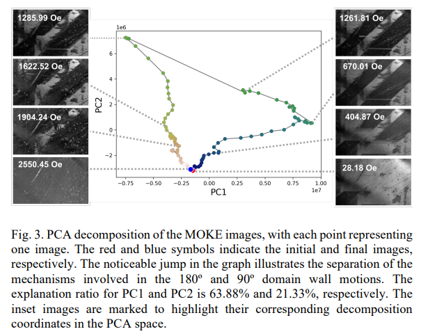
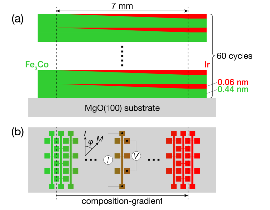
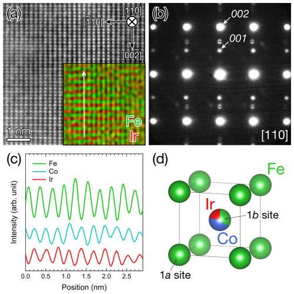
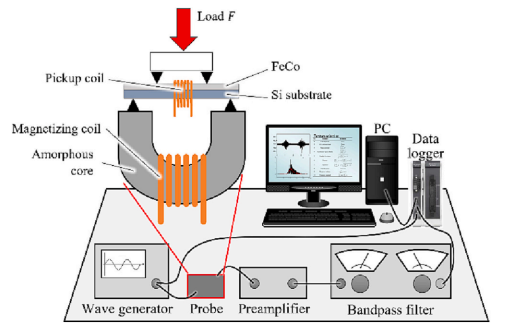
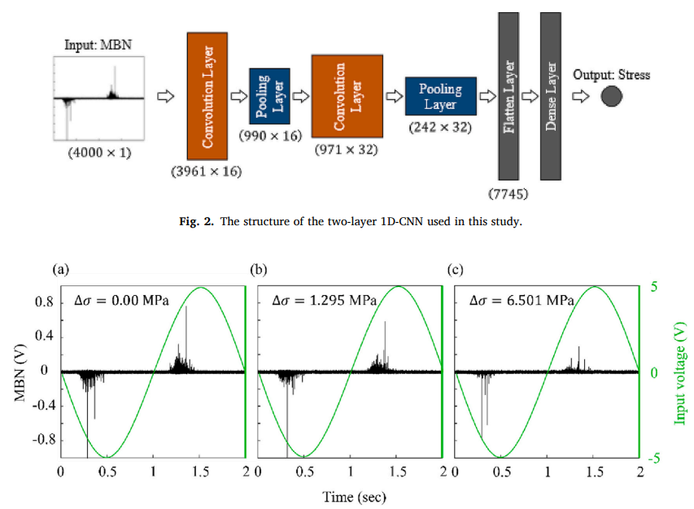

論文タイトル一覧
次元削減技術を用いたFe-Ga合金単結晶の磁歪メカニズムの可視化
高速フーリエ変換（FFT）と教師なし機械学習技術を組み合わせて、磁気光学カー効果（MOKE）顕微鏡で撮影したFe-Ga合金単結晶の磁気ドメイン構造を分析した。主成分分析（PCA）により、磁歪と磁気ドメイン構造の相関を抽出し、180度と90度のドメイン壁運動に関与する異なるメカニズムを識別した。磁歪の最適化に向けて、材料情報学的手法の有効性と可能性を示した。
2023-09-06
Visualization of the Magnetostriction Mechanism in Fe-Ga Alloy Single Crystal Using Dimensionality Reduction Techniques
IEEE Transactions on Magnetics, 59, 11 (2023)
Visualization of the Magnetostriction Mechanism in Fe-Ga Alloy Single Crystal Using Dimensionality Reduction Techniques
IEEE Transactions on Magnetics, 59, 11 (2023)

【コメント】
磁区画像とミクロ磁歪の関係を機械学習で接続したもの
【用語】 磁歪：磁性材料の形状や寸法が、外部磁場の影響で磁化方向に沿って変化する現象。磁歪係数は、磁場によるひずみの大きさを表す指標である。磁歪は、センサーやアクチュエーターなどの応用に利用される。磁気光学カー効果：磁化された表面から反射した光の偏光状態が変化する磁気光学効果の一種。偏光状態の変化は、カー角やカー楕円率として定量化される。磁気光学カー効果は、磁気ドメイン構造の観察に用いられる装置として、カー顕微鏡の原理となっている。主成分分析：多変量データを、データの分散を最大限に説明するように直交する成分に線形変換する統計的手法。主成分分析は、データの次元数を削減するために用いられる。主成分分析は、データの特徴を抽出するために、機械学習やデータ分析において広く利用される。
【提案手法】 MOKE顕微鏡を用いて、様々な外部磁場下でFe-Ga合金単結晶の磁気ドメイン構造の画像を撮影した。画像に対して、SVDとRPCAというノイズ除去技術を適用して、磨き傷などの影響を除去した。画像に対して、FFTを用いて、磁気ドメインの周期性に関する情報を抽出した。FFT画像をベクトル化して積み重ねた後、PCAを用いて、次元数を削減した。PCAの成分と磁化や磁歪との関係をプロットして、磁気ドメイン構造と磁歪メカニズムとの相関を分析した。
【学術的新規性】 本研究は、Fe-Ga合金単結晶の磁歪メカニズムを可視化するために、FFTとPCAという次元削減技術を組み合わせて用いた点で、先行研究とは異なる。本研究は、PCAの成分と物理的性質との間に強い相関があることを示し、磁歪の大きさや方向性に影響を与える要因を明らかにした点で、磁歪メカニズムの理解に貢献した。
【用語】 磁歪：磁性材料の形状や寸法が、外部磁場の影響で磁化方向に沿って変化する現象。磁歪係数は、磁場によるひずみの大きさを表す指標である。磁歪は、センサーやアクチュエーターなどの応用に利用される。磁気光学カー効果：磁化された表面から反射した光の偏光状態が変化する磁気光学効果の一種。偏光状態の変化は、カー角やカー楕円率として定量化される。磁気光学カー効果は、磁気ドメイン構造の観察に用いられる装置として、カー顕微鏡の原理となっている。主成分分析：多変量データを、データの分散を最大限に説明するように直交する成分に線形変換する統計的手法。主成分分析は、データの次元数を削減するために用いられる。主成分分析は、データの特徴を抽出するために、機械学習やデータ分析において広く利用される。
【提案手法】 MOKE顕微鏡を用いて、様々な外部磁場下でFe-Ga合金単結晶の磁気ドメイン構造の画像を撮影した。画像に対して、SVDとRPCAというノイズ除去技術を適用して、磨き傷などの影響を除去した。画像に対して、FFTを用いて、磁気ドメインの周期性に関する情報を抽出した。FFT画像をベクトル化して積み重ねた後、PCAを用いて、次元数を削減した。PCAの成分と磁化や磁歪との関係をプロットして、磁気ドメイン構造と磁歪メカニズムとの相関を分析した。
【学術的新規性】 本研究は、Fe-Ga合金単結晶の磁歪メカニズムを可視化するために、FFTとPCAという次元削減技術を組み合わせて用いた点で、先行研究とは異なる。本研究は、PCAの成分と物理的性質との間に強い相関があることを示し、磁歪の大きさや方向性に影響を与える要因を明らかにした点で、磁歪メカニズムの理解に貢献した。
Ir添加によるFe0.75Co0.25単結晶薄膜の負の異方性磁気抵抗効果の起源
Ir添加によりFe3CoのB2規則相が生成することをX線回折や電子顕微鏡で明らかにした。このB2規則相はFe-Co-Ir三元系の平衡相図には現れない準安定相である。Ir添加によりFe3Coの異方性磁気抵抗（AMR）比が正から負に変化し、最大で-4.7%（10 K）と-3.6%（300 K）に達することを測定した。これらの負のAMR比は重金属添加した3d遷移金属合金の中で最大の値である。電子散乱理論を用いて、B2規則相における負のAMR比の起源を説明した。B2規則相では、Feのdε軌道とdγ軌道の間のエネルギー差が小さく、dγ軌道の状態密度がdε軌道よりも大きいことが、s-d散乱におけるAMR比の符号を決める重要な要因であることを示した。
2023-08-07
Origin of negative anisotropic magnetoresistance effect in Fe0.75Co0.25 single-crystal thin films upon Ir addition
Phys. Rev. Materials 7, 084401 (2023)
Origin of negative anisotropic magnetoresistance effect in Fe0.75Co0.25 single-crystal thin films upon Ir addition
Phys. Rev. Materials 7, 084401 (2023)


【コメント】
FeCoIrコンビ膜で磁気抵抗効果の起源を探究したもの
【用語】 異方性磁気抵抗（AMR）効果：強磁性体において、電流方向と磁化方向の相対角度によって電気抵抗が変化する現象。スピン軌道相互作用によって起こるスピン依存的な輸送現象の一つである。B2規則相：立方晶系の格子構造の一種で、1aサイト（0,0,0）と1bサイト（1/2,1/2,1/2）に異なる原子が交互に配置される。Fe3Co–Irでは、1aサイトにFe原子が、1bサイトにFe、Co、Ir原子が混在する。電子散乱理論：電子が物質中を移動する際に、他の電子や原子核と衝突することで散乱される現象を記述する理論。散乱の強さや角度分布は、散乱体の種類やエネルギーに依存する。電子散乱は、物質の電気伝導や磁気特性に影響を与える。[D(d)γ− − D(d)ε−]/D(d)ε−とは、d軌道のεとγの部分状態密度の差をεの部分状態密度で規格化した値である。この値は、異方性磁気抵抗（AMR）比の符号や大きさを決める重要な要因の一つ。dγ軌道の部分状態密度がdε軌道よりも大きいと、AMR比は負になり、逆に、dε軌道の部分状態密度がdγ軌道よりも大きいと、AMR比は正になる。
【提案手法】 Ir添加によるFe0.75Co0.25単結晶薄膜の作製：コンビネータリー溶射法を用いて、MgO(100)基板上にIr濃度が連続的に変化するFe0.75Co0.25単結晶薄膜を作製した。Ir濃度は0から11%まで変化し、膜厚は30 nmであった。作製後、真空中で約380℃で30分間アニール処理を行った。X線回折による結晶構造の解析：室温で、Ir濃度に応じてX線回折パターンを測定した。χ=0°と54.7°の測定配置を用いた。平面内と垂直方向の格子定数やB2規則度を求めた。また、シンクロトロン放射光を用いて、低Ir濃度領域やFe-K吸収端付近のX線回折パターンを測定した。電子顕微鏡による結晶構造の観察：Ir濃度が11%の領域の断面を電子顕微鏡で観察した。高分解能HAADF-STEM像、EDS元素マップ、ナノビーム電子回折パターンを取得し、B2規則相の存在と原子配置を確認した。AMR効果の測定：薄膜を多端子デバイスにパターニングし、10から300 Kまでの温度でAMR効果を測定した。電流は[110]方向に100 μAを印加し、磁場は1 Tで膜面内に回転させた。電流方向と磁化方向の相対角度をϕとし、AMR比を(ρ∥−ρ⊥)/ρ⊥と定義した。電子散乱理論によるAMR比の計算：密度汎関数理論とKKR法を用いて、A2無秩序Fe3Co、A2無秩序(Fe3Co)89Ir11、B2規則(Fe3Co)89Ir11の部分状態密度を計算した。電子散乱理論に基づくモデルを用いて、s-d散乱とd軌道の結晶場を考慮して、AMR比を求めた。
【学術的新規性】 本研究は、Ir添加によりFe3CoにB2規則相が生成することを初めて報告した。このB2規則相は、Fe-Co-Ir三元系の平衡相図には現れない準安定相であり、その形成機構や安定性は今後の課題である。 また、Ir添加によりFe3CoのAMR比が正から負に変化し、重金属添加した3d遷移金属合金の中で最大の負のAMR比を示すことを明らかにした。これは、B2規則相におけるdε軌道とdγ軌道のエネルギー差の小ささとdγ軌道の状態密度の大きさが、s-d散乱におけるAMR比の符号を決めることを理論的に説明した。 最後に、電子散乱理論を用いて、B2規則相における負のAMR比の起源を定量的に解析した。この理論は、s-d散乱とd軌道の結晶場を考慮することで、AMR比の符号や大きさを予測することができる。この理論は、他の重金属添加した3d遷移金属合金にも適用可能である。
【用語】 異方性磁気抵抗（AMR）効果：強磁性体において、電流方向と磁化方向の相対角度によって電気抵抗が変化する現象。スピン軌道相互作用によって起こるスピン依存的な輸送現象の一つである。B2規則相：立方晶系の格子構造の一種で、1aサイト（0,0,0）と1bサイト（1/2,1/2,1/2）に異なる原子が交互に配置される。Fe3Co–Irでは、1aサイトにFe原子が、1bサイトにFe、Co、Ir原子が混在する。電子散乱理論：電子が物質中を移動する際に、他の電子や原子核と衝突することで散乱される現象を記述する理論。散乱の強さや角度分布は、散乱体の種類やエネルギーに依存する。電子散乱は、物質の電気伝導や磁気特性に影響を与える。[D(d)γ− − D(d)ε−]/D(d)ε−とは、d軌道のεとγの部分状態密度の差をεの部分状態密度で規格化した値である。この値は、異方性磁気抵抗（AMR）比の符号や大きさを決める重要な要因の一つ。dγ軌道の部分状態密度がdε軌道よりも大きいと、AMR比は負になり、逆に、dε軌道の部分状態密度がdγ軌道よりも大きいと、AMR比は正になる。
【提案手法】 Ir添加によるFe0.75Co0.25単結晶薄膜の作製：コンビネータリー溶射法を用いて、MgO(100)基板上にIr濃度が連続的に変化するFe0.75Co0.25単結晶薄膜を作製した。Ir濃度は0から11%まで変化し、膜厚は30 nmであった。作製後、真空中で約380℃で30分間アニール処理を行った。X線回折による結晶構造の解析：室温で、Ir濃度に応じてX線回折パターンを測定した。χ=0°と54.7°の測定配置を用いた。平面内と垂直方向の格子定数やB2規則度を求めた。また、シンクロトロン放射光を用いて、低Ir濃度領域やFe-K吸収端付近のX線回折パターンを測定した。電子顕微鏡による結晶構造の観察：Ir濃度が11%の領域の断面を電子顕微鏡で観察した。高分解能HAADF-STEM像、EDS元素マップ、ナノビーム電子回折パターンを取得し、B2規則相の存在と原子配置を確認した。AMR効果の測定：薄膜を多端子デバイスにパターニングし、10から300 Kまでの温度でAMR効果を測定した。電流は[110]方向に100 μAを印加し、磁場は1 Tで膜面内に回転させた。電流方向と磁化方向の相対角度をϕとし、AMR比を(ρ∥−ρ⊥)/ρ⊥と定義した。電子散乱理論によるAMR比の計算：密度汎関数理論とKKR法を用いて、A2無秩序Fe3Co、A2無秩序(Fe3Co)89Ir11、B2規則(Fe3Co)89Ir11の部分状態密度を計算した。電子散乱理論に基づくモデルを用いて、s-d散乱とd軌道の結晶場を考慮して、AMR比を求めた。
【学術的新規性】 本研究は、Ir添加によりFe3CoにB2規則相が生成することを初めて報告した。このB2規則相は、Fe-Co-Ir三元系の平衡相図には現れない準安定相であり、その形成機構や安定性は今後の課題である。 また、Ir添加によりFe3CoのAMR比が正から負に変化し、重金属添加した3d遷移金属合金の中で最大の負のAMR比を示すことを明らかにした。これは、B2規則相におけるdε軌道とdγ軌道のエネルギー差の小ささとdγ軌道の状態密度の大きさが、s-d散乱におけるAMR比の符号を決めることを理論的に説明した。 最後に、電子散乱理論を用いて、B2規則相における負のAMR比の起源を定量的に解析した。この理論は、s-d散乱とd軌道の結晶場を考慮することで、AMR比の符号や大きさを予測することができる。この理論は、他の重金属添加した3d遷移金属合金にも適用可能である。
薄膜の応力評価のための機械学習を用いた磁気バルクハウゼン雑音の解析
薄膜の応力評価に有効な磁気バルクハウゼン雑音（MBN）の特徴量を機械学習の手法である勾配ブースティング決定木（GBDT）と畳み込みニューラルネットワーク（CNN）を用いて抽出した。GBDTとCNNの予測精度を定量的に比較し、GBDTの方が未知のデータに対する汎化性能が高いことを示した。MBN解析における機械学習の利点と課題について、ドメイン知識の必要性や未知データへの適用性の観点から議論した。
2023-06-23
Stress measurement based on magnetic Barkhausen noise for thin films
Microelectronic Engineering 279 (2023) 112057
Stress measurement based on magnetic Barkhausen noise for thin films
Microelectronic Engineering 279 (2023) 112057


【コメント】
磁気バルクハウゼン雑音の機械学習を利用した理解と応用について研究したもの
【用語】 磁気バルクハウゼン雑音（MBN）とは、強磁性材料に磁場を印加したときに発生する磁気ノイズです。MBNは、磁気ドメインの移動によって発生します。磁気ドメインとは、強磁性材料中の磁気的に均一な領域であり、それぞれの領域内の磁気ベクトルが同じ方向を向いています。磁場を印加すると、ドメインの境界が移動し、ドメインの大きさや方向が変化します。このとき、ドメインの境界が結晶欠陥などに引っかかると、急激な磁場の変化が生じ、MBNが発生します。勾配ブースティング決定木（GBDT）とは、決定木という分類や回帰に用いられる機械学習のモデルを複数組み合わせて、誤差を小さくするように学習するアルゴリズムです。畳み込みニューラルネットワーク（CNN）とは、画像や音声などの時空間的な構造を持つデータに対して、局所的な特徴を抽出するための畳み込み層と、特徴マップを縮小するためのプーリング層を交互に重ねたニューラルネットワークの一種です。ドメイン知識とは、特定の分野や領域に関する専門的な知識や経験のことで、機械学習の前処理や特徴量選択において重要な役割を果たします。
【提案手法】 Fe-Co多結晶薄膜に曲げ応力を印加しながら、MBNの時間波形を取得する。MBNの時間波形から、FFTによって周波数スペクトルを求める。GBDTの場合は、周波数スペクトルの形状に基づいて、MBNの平均振幅やピーク振幅などの統計量を計算する。CNNの場合は、周波数スペクトルをそのまま入力とする。GBDTとCNNのそれぞれで、MBNの特徴量と応力の関係を学習する。学習したモデルを用いて、未知のMBNに対する応力の予測を行う。
【学術的新規性】 薄膜の応力評価において、MBNの特徴量を機械学習によって自動的に抽出することで、従来の手作業による特徴量選択の問題を解決した。GBDTとCNNの二種類の機械学習アルゴリズムを用いて、MBNの解析を行い、それぞれの予測精度や汎化性能を定量的に比較した。MBN解析における機械学習の利点と課題について、ドメイン知識の必要性や未知データへの適用性の観点から議論し、今後の研究の方向性を示唆した。
【用語】 磁気バルクハウゼン雑音（MBN）とは、強磁性材料に磁場を印加したときに発生する磁気ノイズです。MBNは、磁気ドメインの移動によって発生します。磁気ドメインとは、強磁性材料中の磁気的に均一な領域であり、それぞれの領域内の磁気ベクトルが同じ方向を向いています。磁場を印加すると、ドメインの境界が移動し、ドメインの大きさや方向が変化します。このとき、ドメインの境界が結晶欠陥などに引っかかると、急激な磁場の変化が生じ、MBNが発生します。勾配ブースティング決定木（GBDT）とは、決定木という分類や回帰に用いられる機械学習のモデルを複数組み合わせて、誤差を小さくするように学習するアルゴリズムです。畳み込みニューラルネットワーク（CNN）とは、画像や音声などの時空間的な構造を持つデータに対して、局所的な特徴を抽出するための畳み込み層と、特徴マップを縮小するためのプーリング層を交互に重ねたニューラルネットワークの一種です。ドメイン知識とは、特定の分野や領域に関する専門的な知識や経験のことで、機械学習の前処理や特徴量選択において重要な役割を果たします。
【提案手法】 Fe-Co多結晶薄膜に曲げ応力を印加しながら、MBNの時間波形を取得する。MBNの時間波形から、FFTによって周波数スペクトルを求める。GBDTの場合は、周波数スペクトルの形状に基づいて、MBNの平均振幅やピーク振幅などの統計量を計算する。CNNの場合は、周波数スペクトルをそのまま入力とする。GBDTとCNNのそれぞれで、MBNの特徴量と応力の関係を学習する。学習したモデルを用いて、未知のMBNに対する応力の予測を行う。
【学術的新規性】 薄膜の応力評価において、MBNの特徴量を機械学習によって自動的に抽出することで、従来の手作業による特徴量選択の問題を解決した。GBDTとCNNの二種類の機械学習アルゴリズムを用いて、MBNの解析を行い、それぞれの予測精度や汎化性能を定量的に比較した。MBN解析における機械学習の利点と課題について、ドメイン知識の必要性や未知データへの適用性の観点から議論し、今後の研究の方向性を示唆した。